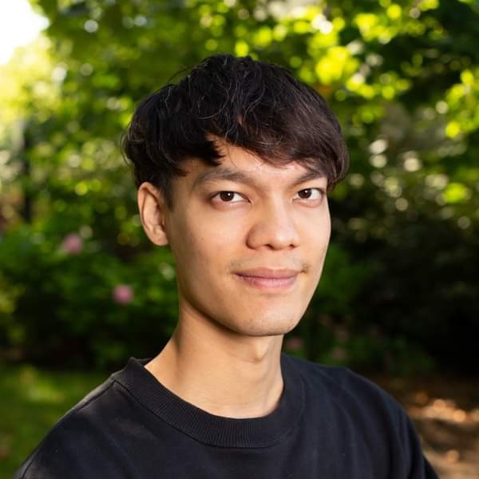
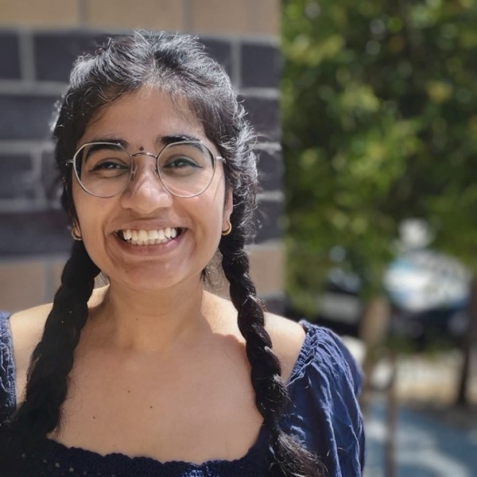
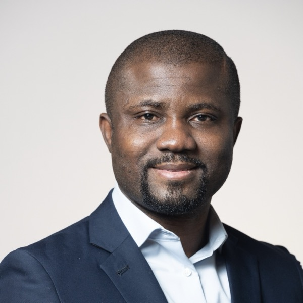
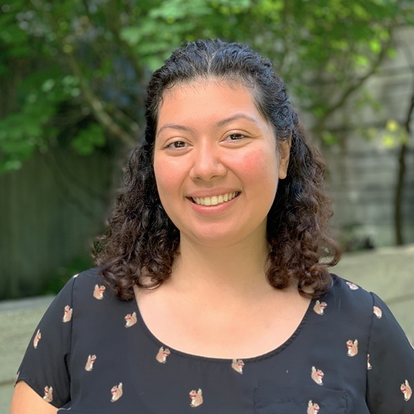

I am an associate professor of Learning Sciences and Computer Science at Northwestern's School of Education and Social Policy and the McCormick School of Engineering. My research aims to advance society's understanding of how students learn in complex learning environments by forging new opportunities for using multimodal technology.
Graduate Students
Jacob Puthipiroj

Jacob is a PhD student in Computer Science and Learning Sciences at Northwestern University. His research focuses on AI education, knowledge representation, and computational linguistics, with an emphasis on developing innovative learning models such as structured hackathons and AI literacy frameworks. In his spare time, Jacob enjoys climbing, quizbowl, and reading social science, which he continuously tries to incorporate into his research.
Khushbu Kshirsagar

Khushbu is a doctoral student in Learning Sciences at Northwestern University. Her work lies at the intersection of mechanical design, mathematics, and art, focusing on informal learning spaces such as museums, playgrounds, and everyday public environments. Khushbu is passionate about encouraging creative exploration and accessibility through her designs; reimagining where and how learning happens, and about designing tools that support playful, curiosity-driven interactions beyond traditional classrooms.
Michael Smith
Michael Smith is a Computer Science and Learning Sciences PhD student at Northwestern University, and a National GEM Consortium PhD Fellow. Some of his research and project interests include exploring the intersections of technology & education, formal and informal learning, computing culture, new media and community, and games.
Sarah (she/her) is a PhD candidate in Learning Sciences, working on an ethnographic account of refugee students and a cross-cultural coalition of youth across informal educational settings. She examines practices of intergenerational learning and (multi)culturally sustaining pedagogy that complicate notions of youth identity and belonging (vis-à-vis transnationalism and spatial justice). She also enjoys calls with family or friends, various forms of crafting, making coffee (currently AeroPressing), and initiating group hugs.
Ashley is a Learning Sciences PhD candidate at Northwestern University. Their research focuses on data education across K-16 contexts with an emphasis on agency, culture, and identity.
Tochukwu Eze

Tochukwu is a PhD candidate in Computer Science at Northwestern University, specializing in Collaborative Learning Analytics, AI, and Educational Technology. He focuses on developing predictive models to analyze student cognition, behavior, and interaction, utilizing computer vision and NLP techniques. He has developed a collaboration literacy analytics framework and a multimodal fusion ML algorithm to assess the same. Tochukwu is also a lifetime member of the Edward Alexander Bouchet Graduate Honor Society, a fellow of the Center for Leadership, the Assistant Chair of Chapin Residential College at Northwestern University, and the Co-president of the African Graduate Student Association, where he fosters a supportive environment for African graduate students, emphasizing cultural exchange and academic excellence. He enjoys traveling, exploring diverse cultures, and is passionate about the intersection of technology, education, and social impact.
Victoria C. Chavez

Victoria (V/they/she) is a Chicago-born and raised Chapine (Guatemalan) educator, scholar, and engineer. Currently, they’re a third-year PhD student at Northwestern University's Computer Science Program. Victoria’s research interests explore systemic issues within computer science education, centering the experiences of Black, Disabled, Indigenous, and Latine/x students. Most recently, their research has focused on teaching and learning accessibility as well as unpacking how ableism is codified in the policies, practices, and pedagogies used in college CS courses.
As a disabled researcher and educator, Meg is particularly interested in educational dignity. Her work seeks to challenge the deficit-based views of human learning that are complicit in the reification of normatively powered dynamics and push beyond the practices that maintain and enact ableism to a dynamic coexistence of multiple ways of seeing and knowing. She enjoys riding her bike, hanging out with animals, and eating Albanese gummy bears.